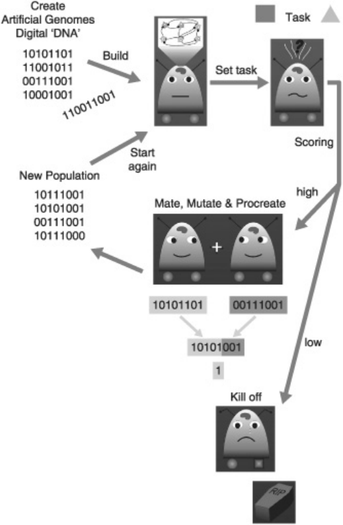
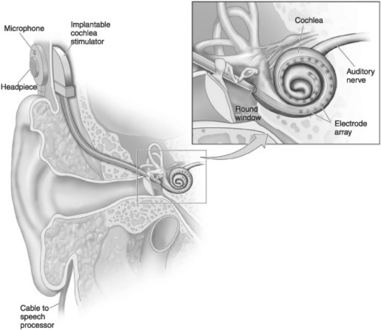
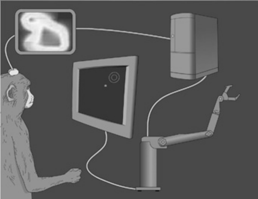

Chương 7: Não Bộ Tổn Thương: Phát Minh Và Can Thiệp
Một trong những lĩnh vực nghiên cứu não bộ thú vị và có tiềm năng mang lại lợi ích nhất nằm ở giao diện giữa khoa học thần kinh và các ngành khoa học vật lý như kỹ thuật, công nghệ thông tin và robot học. Tại đây, khoa học sinh học và khoa học vật lý hội tụ trong một liên minh sáng tạo mới nhằm khai thác những điểm tương đồng và khác biệt giữa cách não bộ và máy tính vận hành. Những lợi ích tiềm năng của nghiên cứu này đa dạng không kém phần quan trọng. Chúng bao gồm khả năng tạo ra những thực thể lai giữa não và máy (brain–machine hybrids) có thể khôi phục các chức năng cảm giác và vận động của não bộ bị tổn hại do bệnh tật hoặc tai nạn. Những thiết bị này cũng có thể mở rộng năng lực của bộ não bình thường, biến người máy sinh học trong truyện khoa học viễn tưởng thành hiện thực. Bên cạnh đó, sự cộng hưởng giữa khoa học thần kinh và khoa học máy tính có khả năng mang đến một thế hệ tác nhân trí tuệ nhân tạo mới, chẳng hạn như những robot di động tự hành, để thực hiện những công việc mà chúng ta muốn không phải tự mình làm. Trong lĩnh vực nghiên cứu liên ngành mới này có những cơ hội khoa học và y học theo hai hướng khác nhau. Một mặt, khoa học máy tính có thể được dùng để giúp chúng ta hiểu và kiểm soát hoạt động của não bộ. Đồng thời, hiểu biết về cách não bộ vận hành có thể giúp chúng ta thiết kế những máy tính tốt hơn.
Sự quan tâm của các nhà khoa học máy tính đối với khoa học thần kinh là hoàn toàn dễ hiểu. Sau cùng, một số khía cạnh trong những gì não bộ làm có thể được xem là mang tính tính toán (computational), và máy tính kỹ thuật số là một ẩn dụ đầy sức thuyết phục cho não bộ. Nhưng chúng ta phải cẩn thận đừng nhìn nhận não bộ giống như một máy tính theo cách tim giống như một cái bơm. Tim không chỉ giống như một cái bơm, nó là một cái bơm; não bộ thì không phải là máy tính; ít nhất là chưa phải. Có thể hiểu mọi thứ về cách tim hoạt động bằng cách tìm hiểu cách nó vận hành như một cái bơm. Chúng ta không thể nói về não bộ theo cách tương tự. Nếu mô hình của chúng ta về cách não bộ vận hành bị chi phối bởi việc viện dẫn cách máy tính hoạt động, cuối cùng chúng ta sẽ thất bại trong việc hiểu não bộ, bởi vì điều thú vị nhất mà nó làm – ‘suy nghĩ’ – về cơ bản không phải là một quá trình tính toán.
Vì vậy, dù có những điểm tương đồng với máy tính về một số mặt, não bộ vẫn có thể thực hiện những nhiệm vụ mà máy tính và robot gần như hoàn toàn bất lực, nhưng lại là những điều mà các kỹ sư rất muốn đạt được một cách nhân tạo. Hãy lấy ví dụ công việc tẻ nhạt là hút bụi phòng ngủ của một đứa trẻ. Chắc hẳn trí tuệ nhân tạo, phần mềm nhận dạng mẫu và công nghệ robot tiên nhất đã giúp NASA đưa một tàu thăm dò di động lên bề mặt sao Hỏa phải hơn đủ sức để chế tạo một chiếc máy hút bụi robot tự hành tiện dụng. Thế nhưng hiện bạn vẫn chưa thể mua được một chiếc máy hút bụi robot đủ thông minh để tin tưởng trong phòng ngủ của trẻ. Robot không suy nghĩ, và hơn nữa chúng ta hoàn toàn không biết cách viết một chương trình cho sự suy nghĩ. Sẽ không thể lập trình cho một robot dọn phòng ngủ của trẻ, bởi bạn không thể viết một thuật toán cho tâm trí của người đang ở trong phòng. Bạn sẽ cần hình thức hóa những gì, trong thế giới quan của một đứa trẻ cụ thể, là rác và những gì là kho báu, và điều đó đơn giản là không thể. Để nhiệm vụ dường như càng khó đạt hơn, những kho báu của đứa trẻ là những mục tiêu di động; kho báu của hôm nay có thể trở thành rác của ngày mai. Tóm lại, đối với công việc bình thường này, bạn cần có một lý thuyết về tâm trí của đứa trẻ đang ở trong phòng. Nếu không, bạn sẽ dành nhiều thời gian hơn để lấy lại những đồ vật nhỏ nhưng vô giá từ túi hút bụi đầy lông tơ so với thời gian bạn đã dọn dẹp ban đầu.
Khả năng hạn chế của các thiết bị tính toán dựa trên silic trong việc bắt chước ngay cả những hành vi thông minh tự nhiên đơn giản nhất đã khiến nhiều người trong chúng ta xem xét cách làm cho máy tính trở nên hữu cơ hơn. Hy vọng là trí tuệ nhân tạo mạnh hơn, gần giống với dạng thức tự nhiên hơn, có thể trở thành hiện thực nếu các tác nhân nhân tạo kết hợp các cơ chế xử lý thông tin phi tuyến tính đặc trưng của não bộ thật. Dù dễ bị cuốn theo những khả năng hiệu năng ấn tượng của máy tính ngày nay, ngay cả NASA cũng không tin tưởng cho tàu thăm dò sao Hỏa của mình lang thang một mình, chỉ được dẫn dắt bởi trí thông minh của các máy tính trên tàu. Trí thông minh đứng sau con robot đó là con người, cách đây khoảng 64 triệu dặm, đang điều khiển một cần điều khiển (rất) từ xa. NASA không thể tin tưởng robot hoạt động tự chủ, không phải vì máy tính của nó quá nhỏ, mà vì hiện không có máy tính nào, dù lớn đến đâu, có thể thay thế thỏa đáng trí thông minh con người. Siêu máy tính mạnh nhất thế giới nặng một tấn, có kích thước bằng một căn phòng trung bình, và tiêu thụ năng lượng với tốc độ gấp hơn một triệu lần não người, đồng thời lại không sánh được với nó về bất kỳ thước đo nào của trí thông minh sáng tạo.
Dù chúng ta có thể kỳ vọng nhịp độ tiến bộ trong sức mạnh tính toán tiếp tục, trí thông minh đích thực sẽ không tự nhiên xuất hiện. Nếu máy tính tiếp tục tuân theo định luật Moore – mật độ linh kiện trong máy tính tăng gấp đôi sau mỗi 18 tháng – chúng chắc chắn sẽ đi trên con đường vượt qua mật độ xếp chặt linh kiện trong não người, có thể là vào cuối thập kỷ này. Nhưng ngay cả khi định luật Moore tiếp tục đúng vô hạn, cũng không có bằng chứng nào cho thấy riêng điều đó sẽ dẫn đến sự xuất hiện của trí thông minh thực sự giống người ở một cỗ máy. Một lý do dường như là mối quan hệ giữa độ phức tạp, hiệu năng và thông tin cần thiết để chế tạo máy tính cũng như não bộ hoàn toàn không thể so sánh được giữa hai loại ‘máy’ này. Não của một con ruồi chứa khoảng 100.000 tế bào thần kinh, cần hướng dẫn xây dựng nằm trong khoảng 20.000 gen. Não người với số linh kiện nhiều gấp mười triệu lần có thể được tạo ra chỉ với hướng dẫn nằm trong số gen gấp đôi (bộ gen người chứa khoảng 40.000 gen). Rõ ràng não người phức tạp hơn não ruồi rất nhiều bậc, nhưng quan trọng hơn, sự phức tạp gia tăng đó đi kèm với một tập hợp thuộc tính hoàn toàn mới. Não người là một cỗ máy tư duy sáng tạo; não ruồi thì chắc chắn không phải.
Không nghi ngờ gì chúng ta đang chế tạo những máy tính ngày càng phức tạp và nhanh hơn với tốc độ ấn tượng. Nhưng ngay cả những bộ não nhân tạo phức tạp nhất cũng không tiệm cận được hiệu suất hay năng lực của não một con ruồi. Sau cùng, một con ruồi có thể bay nhanh qua bụi rậm bằng một máy tính trên tàu có kích thước bằng một dấu chấm câu. Hãy thử thay não nó bằng một siêu máy tính buộc trên lưng con ruồi khốn khổ – ruồi bị bẹp thì không bay được! Máy tính thông thường kém hiệu quả và vốn dĩ không thông minh đến mức không có gì đáng ngạc nhiên khi các nhà khoa học máy tính hiện đang hướng sự chú ý sang khoa học thần kinh để tìm cảm hứng tạo ra thế hệ máy móc mới hiệu quả và thông minh thích ứng.
Có hai cách mà khoa học thần kinh có thể được khai thác để định hướng các phát triển tương lai trong khoa học máy tính và trí tuệ nhân tạo. Theo cách thứ nhất, các cơ chế thần kinh sinh học được mô phỏng trong các thiết bị silic. Theo cách thứ hai, các tế bào thần kinh thật và các mạng lưới thần kinh thật phát triển trong ống nghiệm (in vitro) tương tác trực tiếp với các thiết bị silic.
Xu hướng của chúng ta trong việc xem xét những điểm tương đồng giữa các thiết bị sinh học và thiết bị do con người chế tạo, một truyền thống được Descartes tiếp nhận (xem Chương 2), đã từng là nguồn cảm hứng cho những phát triển quan trọng trong khoa học máy tính. Các nhà khoa học máy tính đã táo bạo mượn các thuật ngữ và khái niệm từ khoa học thần kinh trong việc thiết kế các thiết bị silic được gọi là mạng nơ-ron nhân tạo (artificial neural networks [ANNs]). Trong các ANN, các thực thể hay nút giống tế bào thần kinh được kết nối với nhau thành những mạng lưới rộng lớn, nơi chúng tích hợp các đầu vào cho đến khi đạt đến một ngưỡng kích hoạt đầu ra, hoạt động phần lớn giống như cách các tế bào thần kinh thật trong các mạng thần kinh thật. Các mạng nhân tạo có thể được huấn luyện để nhận dạng và phản ứng với các mô hình đầu vào phức tạp, có thể được cấu hình để đóng vai trò là hệ thần kinh nhân tạo của các robot di động, hoặc chúng có thể được ‘tiến hóa’ bằng cách áp dụng các thuật toán di truyền (genetic algorithms) nhằm kết hợp các quá trình bổ sung mượn từ khoa học não bộ.
Rõ ràng những thiết bị này đại diện cho một nỗ lực gián tiếp nhằm đưa một sự trừu tượng hóa của môi trường sinh học của não vào một hệ thống hoàn toàn nhân tạo. Tốt nhất, các ANN thông thường chỉ mô phỏng một phiên bản được đơn giản hóa cao độ của hệ thống liên lạc từ tế bào thần kinh đến tế bào thần kinh trong não. Như chúng ta đã thấy trong Chương 3, hệ thống tín hiệu của não còn nhiều thứ hơn là chỉ sơ đồ dây dẫn khớp thần kinh. Tuy nhiên, các ANN thông thường không đưa vào các phiên bản nhân tạo của sự dẫn truyền thần kinh điều hòa hay của liên lạc không qua khớp thần kinh. Những nỗ lực mô phỏng hệ thống liên lạc hóa học của não đã dẫn đến một thế hệ ANN mới, lấy cảm hứng từ nghiên cứu gần đây cho thấy các tế bào thần kinh có thể liên lạc không qua khớp thần kinh bằng cách giải phóng các khí khuếch tán như nitơ oxit (NO). NO được sản xuất bởi các tế bào thần kinh đặc biệt và khuếch tán theo mọi hướng vào một thể tích của não có thể chứa nhiều tế bào thần kinh và khớp thần kinh khác bị ảnh hưởng bởi nó. Đặc điểm then chốt ở đây, được mô phỏng trong một ANN ‘GasNet’, là bằng cách dùng một chất dẫn truyền khuếch tán, một tế bào thần kinh có thể ảnh hưởng đến tế bào khác mà thực sự không được kết nối hay ‘nối dây’ với nó qua khớp thần kinh. Vì vậy các GasNet bao gồm tính kết nối hay dây dẫn khớp thần kinh như các ANN thông thường, nhưng chúng cũng mô phỏng liên lạc điều hòa dạng khí. Nhờ có thêm hình thức liên lạc này, các GasNet đã được chứng minh là thích ứng tốt hơn các mạng thông thường chỉ dựa vào mô phỏng tính kết nối khớp thần kinh.

Hình 17 — Tiến hóa nhân tạo của bộ não robot. Những bộ não nhân tạo có khả năng giải quyết các vấn đề ‘thực tế’ mà robot có thể gặp phải có thể được tạo ra bằng một quá trình lấy cảm hứng từ sự tiến hóa của não thật qua chọn lọc tự nhiên. Mỗi cá thể trong một quần thể mạng nơ-ron nhân tạo được đưa qua một phép thử độ thích nghi, trong trường hợp này là nhận diện các tam giác và điều hướng về phía chúng, đồng thời tránh các hình vuông. Những cá thể đạt điểm cao ‘giao phối’ với nhau, kết hợp các phần trong chỉ dẫn ‘di truyền’ vượt trội của chúng. Các đột biến cũng được đưa vào trong quá trình tạo ra thế hệ kế tiếp – một quần thể gồm những cá thể khá hơn đôi chút. Chúng lại được đưa qua phép thử một lần nữa. Sau hàng trăm lần lặp lại chu trình này, một bộ não có khả năng dẫn robot đến các tam giác một cách đáng tin cậy được tạo ra. Điều này đạt được mà không cần các nhà khoa học robot phải thiết kế một bộ não cho nhiệm vụ đó, thậm chí không cần hiểu bộ não đã tiến hóa ấy hoạt động như thế nào.
Có hai cách mà các GasNet vượt trội hơn các mạng nhân tạo thông thường. Thứ nhất, với cùng sức mạnh tính toán, chúng dùng ít tế bào thần kinh hơn và có kiến trúc đơn giản hơn so với các mạng nhân tạo thông thường, khiến chúng hiệu quả hơn. Thứ hai, và quan trọng hơn, chúng dễ dàng tạo ra hơn đáng kể bằng cách áp dụng một thuật toán di truyền. Chẳng hạn, một thuật toán di truyền có thể được dùng để tiến hóa các hệ thần kinh nhân tạo cho những robot tự hành di động. Ưu điểm của cách tiếp cận tiến hóa nhân tạo này là chúng ta không cần dùng các kỹ thuật thiết kế kỹ thuật thông thường trong việc tạo ra bộ não của robot. Tất cả những gì cần làm là xác định nhiệm vụ hành vi mà bạn muốn robot thực hiện. Thuật toán di truyền tạo ra một quần thể (thế hệ đầu tiên) gồm các bộ não, trong đó các mạch và cơ chế thần kinh được xác định bằng một mã máy tính gồm các chuỗi dài gồm số 0 và số 1. Những chuỗi này có thể được xem như DNA kỹ thuật số, cung cấp bản thiết kế ‘di truyền’, tức các hướng dẫn về cấu trúc và chức năng của các bộ não nhân tạo. Mỗi robot trong quần thể được thử về năng lực thực hiện nhiệm vụ và một điểm độ thích nghi được gán cho mỗi cá thể. Dĩ nhiên, ban đầu, trong những thế hệ đầu, phép thử độ thích nghi chỉ cho phép nói rằng một cá thể tệ hơn đôi chút so với cá thể khác. Tiếp theo là một thủ tục giao phối mang tính ưu tú rõ rệt, trong đó những cá thể đạt điểm cao nhất tham gia ‘giao hợp’ giả lập. Các cặp robot trao đổi một số phần ‘DNA’ của chúng, được tái tổ hợp trong quá trình tạo ra hướng dẫn cho bộ não của thế hệ kế tiếp. Ở giai đoạn này, các đột biến được đưa vào ngẫu nhiên trong các hướng dẫn (gồm việc đổi một vài số 0 thành số 1 và một vài số 1 thành số 0). Quá trình này tạo ra một quần thể con gồm những cá thể khá hơn hay ‘thích nghi hơn’ đôi chút, chúng lại được thử nghiệm, với tiêu chuẩn độ thích nghi nghiêm ngặt hơn hiện được áp dụng. Ở mỗi phép thử độ thích nghi, những cá thể hoạt động kém trong quần thể bị loại bỏ – nói vậy thôi.
Nhiệm vụ càng phức tạp thì cần thử nghiệm càng nhiều thế hệ trước khi nhiệm vụ hành vi được thực hiện thỏa mãn. Nhưng số thế hệ ít hơn ít nhất mười lần nếu thuật toán di truyền đang tiến hóa một GasNet thay vì một ANN thông thường. Vì vậy, có vẻ như bằng cách mô phỏng sự khuếch tán và điều hòa bên cạnh tính kết nối khớp thần kinh, các GasNet có tiềm năng vượt trội các ANN thông thường hơn. Điều này rất đáng khích lệ vì nó gợi ý rằng nếu chúng ta tiến xa hơn nữa và đưa vào các ANN những cơ chế thần kinh thực tế hơn, chúng ta sẽ cải thiện cơ hội tạo ra những tác nhân nhân tạo thích ứng hơn và có thể thông minh tự nhiên hơn. Điều thú vị là, trong cách tiếp cận tiến hóa này, các thiết bị tính toán cuối cùng lại chẳng giống những gì được tạo ra bằng trí tuệ thông thường của thiết kế máy tính kỹ thuật số hiện nay.
Có thể tưởng tượng rằng những cỗ máy biết suy nghĩ, có thể thậm chí có ý thức, có thể được tiến hóa bằng các thuật toán di truyền không? Sau cùng, chúng ta hoàn toàn không biết cách thiết kế một cỗ máy như vậy. Vậy tại sao lại cố hiểu quá trình đó khi bạn có thể tiến hóa nó mà không nhất thiết phải nắm được mối quan hệ giữa cấu trúc và các thuộc tính của nó – điều này gợi nhớ mức độ hiểu biết hiện tại của chúng ta về cách não thật suy nghĩ.
Trong chiến lược thứ hai, thậm chí táo bạo hơn, công nghệ chip silic được kết hợp rõ ràng với sinh học bằng cách nuôi cấy một mạng lưới tế bào thần kinh thật trên chip. Nhờ cách này, các thiết bị silic có thể liên lạc với các tế bào thần kinh và ngược lại. Mục tiêu cuối cùng là chế tạo, từ các tế bào thần kinh sống tương tác với một môi trường điện tử, một máy tính siêu thông minh có khả năng suy nghĩ giống con người. Có thể tưởng tượng một máy tính hữu cơ gồm các tế bào thần kinh sống, một bộ phận giả cho não, lấy năng lượng hiệu quả từ oxy và chất dinh dưỡng không? Chúng ta còn cách mục tiêu này rất xa, nhưng một số phòng thí nghiệm, trong đó có của tôi, đang cố gắng nuôi cấy các tế bào thần kinh theo cách mà chúng có thể được điều khiển và kết nối giao tiếp với các thiết bị silic – những thực thể lai giữa công nghệ dựa trên carbon và silic. Nhờ cách này, máy tính tương lai có thể khai thác động lực xử lý thông tin phi tuyến của các tế bào thần kinh và từ đó trở nên thực sự thông minh.
Những vấn đề thực tiễn của công nghệ tương lai này đặt ra một thách thức to lớn, và cả hai cách tiếp cận hướng tới điện toán hữu cơ hơn – mô phỏng và kết nối giao tiếp trực tiếp các quá trình sinh học – đều còn trong giai đoạn sơ khai. Nhưng các dấu hiệu đều tích cực. Rõ ràng các công nghệ máy tính và phương pháp tính toán lấy cảm hứng từ sinh học mang triển vọng thực sự về một bước nhảy vọt về lượng tử trong khả năng của các hệ thống nhân tạo tiệm cận các mức độ trí thông minh thích ứng mà chúng ta coi là đương nhiên ở chính mình. Điều này không có nghĩa là những tiến bộ trong công nghệ tính toán thông thường diễn ra chậm chạp hay chỉ mang tính gia tăng. Rõ ràng không phải vậy, vì tốc độ xử lý, dung lượng bộ nhớ và sự thu nhỏ đã tiến bộ ngoạn mục trong vài thập kỷ qua. Nhưng có thể nói nhịp độ đó lẽ ra phải đưa chúng ta đến gần hơn đáng kể với việc chế tạo những cỗ máy tự suy nghĩ so với hiện tại.
Dường như không có nghi ngờ gì rằng ảnh hưởng của khoa học thần kinh đối với thế hệ máy tính tiếp theo sẽ tìm thấy mọi loại ứng dụng có lợi. Trong số đó quan trọng sẽ là các công nghệ y học phụ thuộc vào việc kết nối não bộ với các thiết bị điện tử nhân tạo. Một số trong những công nghệ này đã sử dụng hiệu quả các hệ thống máy tính thông thường. Nhưng vì những phát triển này đòi hỏi máy tính tương tác rất trực tiếp với trí thông minh tự nhiên, đây là một lĩnh vực có khả năng hưởng lợi to lớn từ loại công nghệ máy tính hữu cơ lấy cảm hứng từ sinh học mà chúng ta đã xem xét và sẽ xuất hiện trong tương lai.
Những cỗ máy sửa chữa bộ não tổn thương

Hình 18 — Ốc tai điện tử (cochlear implant). Ở những nơi các tế bào lông thính giác phản ứng trực tiếp với âm thanh bị tổn thương hoặc không phát triển được, các tế bào thần kinh cảm giác mà chúng thường liên lạc có thể được kích thích trực tiếp bằng một dãy điện cực tuyến tính dạng sợi nối với một micro và bộ xử lý âm thanh.
Có hai cách hoàn toàn khác nhau về cơ bản mà não bộ và các thiết bị nhân tạo có thể được kết hợp với nhau để điều trị. Theo cách thứ nhất, thiết bị được cấy ghép kích thích điện các tế bào thần kinh để thay thế chức năng cảm giác đã mất. Theo cách thứ hai, một thiết bị điện tử được đặt lên, trong, hoặc gần não và được dùng để phát hiện các tín hiệu đầu ra điện từ các tế bào thần kinh. Những tín hiệu này được khuếch đại rồi xử lý trong máy tính để chúng có thể điều khiển các thiết bị điện tử hoặc cơ khí bên ngoài hữu ích. Bằng cách có khả năng biến suy nghĩ thành hành động, công nghệ này mang lời hứa rất thực tế là khôi phục chức năng não bộ đã mất, đặc biệt là thiết lập lại quyền kiểm soát có ý chí đối với chuyển động. Trong cả hai loại giao diện não–máy (brain–machine interface [BMI]), đầu vào (kích thích) và đầu ra (ghi nhận/phát hiện), máy tính đều đóng vai trò thay thế cho bộ não bị tổn thương. Tôi sẽ xem xét ngắn gọn cả hai cách tiếp cận và một ứng dụng trong đó sự kích thích não bộ bị ảnh hưởng bởi hoạt động được phát hiện ở đầu ra của não.
Thiết bị kích thích đơn giản nhất được dùng ở người là ốc tai điện tử. Trong hầu hết các trường hợp suy giảm thính lực, các tế bào lông thụ thể âm thanh bị mất, nhưng các tế bào thần kinh cảm giác mà chúng kích thích và có sợi trục tạo thành dây thần kinh thính giác vẫn còn nguyên vẹn. Với ốc tai điện tử, một micro nhỏ bên ngoài bắt lấy các sóng âm và biến chúng thành các xung điện. Những xung này được truyền, qua các mảng điện cực kích thích đa kênh, đến các tế bào thần kinh cảm giác trong ốc tai. Nhìn chung các sóng âm được số hóa, để chúng có thể được xử lý nhằm tăng cường sự hiểu biết, đặc biệt là về lời nói. Sự kích thích điện các tế bào thần kinh trong dây thần kinh thính giác có tác dụng chuyển đổi tín hiệu được tạo ra nhân tạo thành các chuỗi xung thần kinh trong dây thần kinh thính giác mà não bộ giải mã là âm thanh. Nhờ ốc tai điện tử, bệnh nhân suy giảm thính lực có thể lấy lại thính giác chức năng. Họ có thể nhận biết lời nói và, khi dùng cấy ghép hai bên, họ có thể xác định vị trí nguồn âm thanh (xem Chương 5).
Dù là một đề xuất thách thức hơn nhiều, có thể sẽ khôi phục được ít nhất thị lực một phần cho người khiếm thị bằng một thiết bị giả. Cũng như với suy giảm thính lực, một nguyên nhân thường gặp của suy giảm thị lực liên quan đến sự mất các tế bào thụ thể ở võng mạc chứ không phải các tế bào thần kinh truyền thông tin đến não. Võng mạc nhân tạo có thể chuyển các hình ảnh do camera bắt được thành các mô hình hoạt động điện trong một mảng điện cực nhiều điểm. Mảng này có thể kích thích các tế bào thần kinh dọc theo đường thị giác của não. Nếu đường từ mắt đến não còn nguyên vẹn, có thể dùng thiết bị cấy để kích thích các tế bào hạch võng mạc. Hoặc một mảng kích thích có tính kết hợp không gian có thể được đặt trên vỏ não thị giác, bỏ qua võng mạc và khai thác thực tế là bản đồ của thế giới thị giác, sự kết hợp không gian của cảnh thị giác như mắt nhìn thấy, được bảo tồn và chiếu lên vỏ não thị giác.
Các giao diện não–máy liên quan đến kích thích tế bào thần kinh cũng có thể cải thiện một số rối loạn thần kinh, chẳng hạn như bệnh Parkinson và đau mãn tính. Trong bệnh Parkinson, sau sự mất tế bào thần kinh ở chất đen (substantia nigra), các chức năng kiểm soát vận động của các hạch nền bị rối loạn. Những hạch này tham gia vào việc kích hoạt các chuyển động có ý định và trong căn bệnh tiến triển này, bệnh nhân phải chịu một sự bất lực bực bội trong việc thực hiện các hành động tương ứng với ý định của mình. Các điện cực kích thích được cấy vào hạch nền có thể thực hiện một số chức năng điều hòa đã bị mất, cải thiện đáng kể chất lượng cuộc sống của người mắc bệnh Parkinson.
Chính trong sự kết hợp của công nghệ giao diện não–máy đầu ra và đầu vào mà triển vọng đặc biệt để điều trị động kinh được tìm thấy. Đối với một số loại cơn động kinh, các tín hiệu đặc trưng ở vỏ não xuất hiện trước cơn động kinh toàn phát, đôi khi trước vài phút. Một thiết bị ghi nhận có thể nhận ra các tín hiệu này là dấu hiệu báo trước của một cơn sắp xảy ra và thông tin dự báo đó có thể được dùng để cảnh báo bệnh nhân hoặc kích hoạt một thiết bị giao diện kích thích nhằm giảm mức độ nghiêm trọng của cơn. Thiết bị này có thể kích thích điện các đường thần kinh làm giảm hoạt động động kinh ở vỏ não hoặc kích hoạt một hệ thống phân phối thuốc được cấy sẵn. Trong ứng dụng này của công nghệ giao diện, bệnh nhân không có một mà có hai bộ não, và bộ não thứ hai, máy tính, được thiết kế để kiểm soát bộ não sinh học, ngăn nó làm điều gì đó có hại cho bệnh nhân.
Với một nhiệt huyết gần như mang tính truyền giáo, Miguel Nicolelis của Đại học Duke ở Hoa Kỳ đã tiên phong và quảng bá loại công nghệ này, mà ông gọi là giao diện não–máy lai hay HBMI. Ông rất lạc quan rằng trong tương lai HBMI sẽ cho phép não bộ điều khiển máy tính và các thiết bị nhân tạo khác được thiết kế để thay thế các chức năng não bị mất do chấn thương hoặc bệnh tật. Những thí nghiệm ban đầu của Nicolelis trên các loài linh trưởng, đã cung cấp bằng chứng về nguyên lý, được thực hiện trên một con khỉ sóc ban đêm tên là Belle. Bằng cách truy cập vào hoạt động của khoảng 100 tế bào thần kinh ở các vùng khác nhau của vỏ não con khỉ, ông đã chỉ ra rằng các mô hình hoạt động khác nhau dự báo và báo trước các cử động với tay cụ thể khác nhau. Các mô hình biểu thị ý định thực hiện hành động xuất hiện trước các hành động cụ thể một vài phần của giây.
Gần đây hơn, dùng một con khỉ macaque có não giống não người hơn, Miguel Nicolelis đã dùng các mô hình hoạt động thần kinh ghi nhận từ bề mặt vỏ não vận động để điều khiển chuyển động của một cánh tay robot. Trong một minh chứng đáng chú ý về ‘tâm trí chế ngự máy móc’, con khỉ macaque có thể học, nhờ phản hồi thị giác, cách điều khiển chuyển động của cánh tay robot, khiến nó với tới các hướng cụ thể để đáp lại hoạt động não bộ liên quan đến những cử động tương tự của một cần điều khiển mà con khỉ nắm giữ.

Hình 19 — Có thể huấn luyện con khỉ dùng suy nghĩ của mình để dẫn cánh tay robot với lấy một vật.
Con khỉ được thưởng một ngụm nước trái cây vì thực hiện các cử động cần điều khiển dẫn con trỏ đến một mục tiêu trên màn hình máy tính. Mô hình hoạt động não bộ liên quan đến cử động đó được dùng để điều khiển một cử động với tới cụ thể của cánh tay robot. Cuối cùng con khỉ nhận ra rằng nó có thể nhận phần thưởng chỉ bằng cách suy nghĩ; bằng cách tạo ra trong não một ý định di chuyển cần điều khiển. Ý định đó sau đó được chuyển đổi bằng tính toán thành một cử động với tới cụ thể của cánh tay robot.
Rõ ràng lĩnh vực nghiên cứu này có những ứng dụng y học quan trọng. Nhưng ngoài việc mang lại một kỹ thuật điều trị có lợi cho bệnh nhân bị tổn thương não, HBMI có thể dẫn đến một sự tăng cường chưa từng có trong hiệu năng của bộ não bình thường, mở rộng đáng kể khả năng tương tác của não với máy móc. Đây là một viễn cảnh vừa quyến rũ vừa đáng sợ, và chắc chắn đòi hỏi sự suy ngẫm nghiêm túc về đạo đức. Một lĩnh vực ứng dụng đáng được xem xét kỹ là các hệ quả quân sự của công nghệ HBMI, những hệ quả không thoát khỏi sự chú ý của Cơ quan Nghiên cứu Dự án Tiên tiến Quốc phòng Hoa Kỳ (US Defence Advanced Research Projects Agency), cơ quan đang tài trợ cho nghiên cứu giao diện não–máy. Những năng lực vũ khí mới thực sự gây khiêu khích có thể được đặt dưới sự kiểm soát trực tiếp bằng suy nghĩ của một cá nhân. Điều này mang lại lợi thế hơn đối thủ vì sự e dè tự nhiên tốn thời gian của con người và sự suy ngẫm đạo đức sẽ được né tránh gọn gàng bằng cách nối trực tiếp một suy nghĩ với cò bắn.
Bất chấp những lo ngại này, công nghệ HBMI có tiềm năng mang lại lợi ích to lớn cho những bệnh nhân mà kết nối giữa các ý định vận động khởi phát ở vỏ não và khả năng cử động một chi đã bị cắt đứt do chấn thương tủy sống. Trên thực tế, y học ngày nay hầu như không thể làm được gì khác, vì thực tế chúng ta có lẽ còn cách hàng thập kỷ mới có thể hiểu cách thuyết phục hệ thần kinh trung ương tự sửa chữa. Dù có những phát triển gợi ý rằng các liệu pháp tái tạo mang lại một số hy vọng, cho đến khi những liệu pháp đó có hiệu quả trong việc khôi phục chức năng cho các đường dẫn bị tổn thương, công nghệ giao diện não–máy vẫn đưa ra một lựa chọn thực tế và người máy sinh học không còn nhất thiết là đặc sản của truyện khoa học viễn tưởng.
Dĩ nhiên, các thí nghiệm trên khỉ, cho thấy khả năng điều khiển bằng tâm trí các thiết bị giả hữu ích là có thể, liên quan đến các thủ tục phẫu thuật rất xâm lấn và tốn kém. Bên cạnh đó, với công nghệ hiện tại, bệnh nhân sẽ phải có não được nối dây với một số phần cứng máy tính khá cồng kềnh để giải mã thông tin chuyển động mong muốn từ não, cho phép bệnh nhân điều khiển thiết bị robot. Chúng ta có thể dự đoán rằng trong tương lai không quá xa, công nghệ không dây và sự thu nhỏ hơn nữa sẽ cho phép một chi giả được điều khiển dễ dàng bằng ý định suy nghĩ mà không cần bệnh nhân bị ràng buộc với máy tính bằng những dây cáp cồng kềnh. Nhưng việc cấy các mảng vi điện cực vào các vùng thích hợp của vỏ não vẫn sẽ đòi hỏi một ca phẫu thuật lớn.
Khía cạnh không thể tránh khỏi là xâm lấn, và tốn kém, của công nghệ giao diện não–máy đã kích thích sự quan tâm trở lại đối với các kỹ thuật không xâm lấn dùng điện não đồ (electroencephalography [EEG]). Bằng các điện cực đặt trên da đầu, EEG ghi lại hoạt động điện phản ánh tổng hợp hành động của hàng triệu tế bào thần kinh. Tuy nhiên, có những nghi ngờ liệu những bản ghi này có cung cấp thông tin độ phân giải đủ cao về ý định của não hay không. Bất chấp những khó khăn, những tiến bộ đang được thực hiện. Jonathan Wolpaw của Sở Y tế Tiểu bang New York đã chỉ ra rằng cả người bị và không bị chấn thương tủy sống đều có thể học cách điều khiển các mô hình EEG của mình để di chuyển con trỏ trên màn hình máy tính. Không nghi ngờ gì cần làm thêm nhiều để việc kết nối giao diện không xâm lấn hoạt động hiệu quả hơn. Nhưng chi phí rất cao và tính xâm lấn tất yếu của việc kết nối giao diện não–máy bằng cấy điện cực sẽ trở thành ‘người mẹ của phát minh’, và các phương pháp EEG không xâm lấn độ phân giải cao kết hợp với các mô hình huấn luyện và phản hồi hiệu quả hơn cuối cùng sẽ cải thiện đáng kể.
Có những cách khác để kết nối giao diện não–máy trở nên thân thiện hơn với bệnh nhân và hiệu quả hơn trong việc khôi phục chức năng vận động đã mất. Có thể bỏ qua chi giả robot và sắp xếp để thông tin về các ý định vỏ não được dùng điều khiển chính các dây thần kinh vận động hoặc cơ bắp của bệnh nhân. Nếu máy tính có thể biến hoạt động vỏ não thành một mô hình tín hiệu điện liên quan đến ý định được truyền đến các bộ truyền động của chi robot, thì nó cũng có thể truyền các tín hiệu đặc trưng cho chuyển động đến các bộ truyền động sinh học – cơ bắp. Việc kiểm soát trực tiếp dây thần kinh vận động hay cơ bắp rõ ràng là hấp dẫn, đặc biệt vì những chấn thương gây liệt thường không làm tổn hại các mạch vận động tủy sống có khả năng điều khiển cử động chi. Vì vậy, có thể kích thích các mạch vận động tủy sống để tạo ra các cử động chi phối hợp mà không cần nhắm vào từng tế bào thần kinh vận động riêng lẻ. Nếu thành công, công nghệ này sẽ cho phép bệnh nhân phối hợp cử động của mình bằng chính suy nghĩ, bất chấp sự đứt gãy của liên kết sinh học giữa não và tủy sống.
Bộ não tổn thương có thể tự sửa chữa không?
Một số ứng dụng của công nghệ giao diện não–máy nhằm khôi phục chức năng vận động hoặc cảm giác bị mất do hậu quả của chấn thương hoặc bệnh tật ở hệ thần kinh trung ương. Dù những kỹ thuật này thành công đến đâu, có khả năng chúng sẽ luôn bị giới hạn bởi khó khăn trong việc tái tạo nhân tạo tất cả các chức năng do các đường thần kinh bị gãy hoặc tổn thương thực hiện. Một cách tiếp cận thay thế, và theo nhiều cách là tốt hơn, để khôi phục chức năng hệ thần kinh sẽ liên quan đến việc cố gắng sửa chữa, thay vì bỏ qua, đường thần kinh hay vùng não bị ảnh hưởng.
Đây là một thách thức to lớn. Ngược lại với các đường thần kinh cảm giác ngoại vi có thể tự sửa chữa và tái tạo các kết nối ban đầu sau chấn thương, các đường thần kinh trung ương trong não động vật có vú thì không. Chúng ta vẫn chưa biết chính xác tại sao lại tồn tại sự khác biệt này về khả năng sửa chữa giữa hệ thần kinh ngoại vi và trung ương. Cần nghiên cứu hơn nhiều để làm rõ các cơ chế phân tử và tế bào quyết định liệu các tế bào thần kinh bị tổn thương có thể tự sửa chữa hay không, hay liệu những tế bào chết có thể được thay thế bằng tế bào mới hay không. Đây là một lĩnh vực nghiên cứu rất sôi động, và chúng ta chỉ có thể hy vọng rằng trong thời gian tới sẽ đưa đến các liệu pháp khuyến khích các tế bào thần kinh bị gãy tái tạo các kết nối đã mất và cho phép thay thế các tế bào thần kinh đã chết.
Dù việc sửa chữa chấn thương tủy sống và khôi phục hoàn toàn chức năng sau chấn thương tủy sống vẫn nằm ngoài tầm với của y học hiện tại khá xa, những hướng nghiên cứu đầy kết quả đã xuất hiện và hiện có lý do chính đáng để hy vọng rằng trong tương lai không quá xa, chấn thương tủy sống sẽ có thể đảo ngược. Phần lớn nỗ lực nghiên cứu nhằm hiểu tại sao hệ thần kinh trung ương không thể tự sửa chữa. Một số bằng chứng thực nghiệm chỉ ra khả năng điều này là do sự hiện diện của các tín hiệu phân tử ức chế và sự thiếu hụt loại phân tử thúc đẩy tăng trưởng vốn có ở phần ngoại vi. Trong não người trưởng thành, bao myelin bị tổn thương tạo ra các tín hiệu ngăn cản sự tái tạo của các sợi trục bị đứt. Tuy nhiên, trong não đang phát triển, bao myelin lại hỗ trợ sự tăng trưởng của các sợi trục non, và trong hệ thần kinh ngoại vi, bao myelin góp phần vào khả năng mọc lại của các sợi trục ngoại vi sau chấn thương. Cứ như thể ở hệ thần kinh trung ương trưởng thành, nhưng không phải ở não non hay hệ thần kinh ngoại vi, bao myelin lại tạo ra các chất ức chế sự mọc lại của sợi trục, đặc biệt tại vị trí tổn thương.
Nếu những chất ức chế tăng trưởng này có thể được trung hòa, có lẽ các sợi trục trung ương bị tổn thương sẽ tái tạo và tìm lại đường đến mục tiêu của chúng. Vấn đề với cách tiếp cận này là có rất nhiều phân tử ức chế tăng trưởng và chỉ một số ít trong đó đã được biết đến và mô tả. Các loại thuốc trung hòa một số phân tử ức chế tăng trưởng đã được phát triển, nhưng chúng có tác động rất nhỏ đến sự tái tạo. Tiếc rằng có vẻ như tác động của các phân tử ức chế tăng trưởng không đơn thuần là cộng dồn – chỉ một hoặc vài trong số chúng cũng đủ ngăn cản mọi sự tái tạo. Vì vậy, trong một liệu pháp hiệu quả, hầu hết, nếu không phải tất cả, các chất ức chế bắt nguồn từ bao myelin tại vị trí tổn thương sẽ phải được trung hòa hiệu quả để thúc đẩy sự tái tạo của một đường thần kinh bị tổn thương.
Những khó khăn kỹ thuật liên quan đến việc đưa một chất trung hòa hiệu quả và toàn diện tất cả các chất ức chế tăng trưởng đã khiến một số nhà khoa học tìm kiếm các chất thúc đẩy tăng trưởng để hỗ trợ sự tái tạo sợi trục đi quanh, nếu không xuyên qua, một vị trí tổn thương trong não. Cách tiếp cận này, cung cấp một nhịp cầu hỗ trợ tăng trưởng bắc qua các chướng ngại đối với sự tái tạo, phụ thuộc vào việc khai thác môi trường tái tạo mà các tế bào thần kinh ngoại vi sinh sống.
Một cách tiếp cận đầy hứa hẹn khác khai thác một ngoại lệ đối với quy luật rằng các tế bào thần kinh trong hệ thần kinh trung ương trưởng thành không tăng trưởng và không được thay thế. Ngoại lệ này được tìm thấy ở hệ khứu giác của động vật có vú. Tại đây, các tế bào thần kinh mới tiếp tục được tạo ra suốt cuộc đời trưởng thành. Một khi ra đời, các tế bào thần kinh mới kéo dài một sợi trục vào hệ thần kinh trung ương để kết nối với các trung tâm khứu giác của não. Các sợi trục khứu giác đang tăng trưởng được bao bọc bởi một loại bao myelin đặc biệt do loại tế bào đệm duy nhất có khả năng vượt qua ranh giới giữa hệ thần kinh ngoại vi và não tạo ra. Những tế bào đệm này, gọi là tế bào bao bọc khứu giác (olfactory ensheathing cells), là độc nhất ở chỗ chúng cho phép các sợi trục đẩy lùi các tín hiệu ức chế ngăn cản sự tăng trưởng của các sợi trục khác trong não. Năm 1994, Ramon-Cueto và Nieto-Sampedro của Viện Ramon y Cajal ở Madrid đã chỉ ra rằng việc cấy những tế bào đặc biệt này cho phép các sợi trục cảm giác bị đứt mọc ngược vào tủy sống, nơi chúng có thể kết nối lại với mục tiêu và khôi phục chức năng cảm giác. Hiện nay nhiều nhà khoa học khác đã chỉ ra rằng các đặc tính thúc đẩy tái tạo của tế bào bao bọc khứu giác được cấy ghép thậm chí có thể thúc đẩy sự tăng trưởng sợi trục xuyên qua một tủy sống bị đứt. Ghép tế bào bao bọc khứu giác là một trong những chiến lược nghiên cứu đầy hứa hẹn nhất để cải thiện điều trị chấn thương tủy sống và mang lại hy vọng rất thực tế về một liệu pháp hiệu quả.
Không tổn thương, nhưng hoạt động không đúng cách
Trong một số trường hợp, não không bị tổn thương vật lý do chấn thương, đột quỵ, hay tác hại khác, nhưng dù sao vẫn hoạt động rối loạn. Với các tình trạng như trầm cảm, lo âu, mất trí nhớ, và tâm thần phân liệt, có vẻ như các hệ thống liên lạc hóa học của não, chứ không phải các đường dẫn thần kinh, bị ảnh hưởng. Phổ biến nhất là trầm cảm, một tình trạng suy nhược mà khoảng 20–40 phần trăm người trưởng thành sẽ trải qua vào một thời điểm nào đó trong đời.
Bạn sẽ nhớ rằng có hai loại chất truyền tin hóa học hay chất dẫn truyền thần kinh hoàn toàn khác nhau trong não. Có những chất thiết lập sơ đồ dây dẫn của não, đảm bảo các kết nối kích thích hoặc ức chế nhanh giữa các tế bào thần kinh trong các mạng lưới phức tạp. Những chất dẫn truyền nhanh này hoạt động bằng cách gắn vào các phân tử thụ thể đặc biệt trực tiếp kích hoạt dòng ion mang điện chảy vào hoặc ra khỏi tế bào thần kinh bị ảnh hưởng. Người ta cho rằng trầm cảm không phát sinh từ sự gián đoạn của mạng lưới thần kinh trong não. Đúng hơn, có vẻ vấn đề nằm ở các chất dẫn truyền thần kinh gián tiếp, và trầm cảm dường như là tình trạng phản ánh sự bất thường của hóa học não chứ không phải cấu trúc não. Liên quan chặt chẽ với các rối loạn trầm cảm là các chất dẫn truyền monoamine chậm serotonin, noradrenalin, và dopamine. Trong não của người trầm cảm có sự thiếu hụt các chất dẫn truyền này. Chính xác thì điều này gây ra các triệu chứng của trầm cảm, bao gồm mất hứng thú với cuộc sống, giảm cảm giác ăn uống, rối loạn giấc ngủ, và xu hướng tự tử như thế nào vẫn chưa được hiểu đầy đủ, dù chúng ta thực sự biết rằng các loại thuốc làm tăng mức monoamine trong não có thể là một phương pháp điều trị hiệu quả cho căn bệnh này.
Nhóm thuốc quan trọng này được gọi là các chất ức chế tái hấp thu chọn lọc monoamine, một tên gọi đề cập đến cơ chế tác động của chúng. Trong Chương 3 chúng ta đã thấy rằng, sau khi các chất dẫn truyền thần kinh được giải phóng, tác động của chúng phải được kết thúc nhanh chóng để một thông điệp hóa học tiếp theo không bị lẫn với thông điệp trước đó. Quá trình kết thúc tác động của chất dẫn truyền được gọi là bất hoạt. Sự bất hoạt của serotonin và noradrenalin liên quan đến việc loại bỏ chúng khỏi vùng khớp thần kinh bằng một cơ chế tái hấp thu chọn lọc. Bằng cách ức chế sự tái hấp thu của một chất dẫn truyền thần kinh, chất này có xu hướng tích tụ trong não, nồng độ của nó tăng lên, và trong vài tuần các triệu chứng trầm cảm được đảo ngược hoặc cải thiện.
Thuốc chống trầm cảm, loại đầu tiên trong số đó được phát hiện hơn 50 năm trước, hiện là nhóm thuốc được kê đơn rộng rãi nhất. Nhưng trầm cảm vẫn là bệnh tâm lý phổ biến nhất và không phải chuyên gia nào cũng tin tưởng vào hiệu quả của các loại thuốc chống trầm cảm thường được kê đơn, tất cả đều làm tăng mức chất dẫn truyền monoamine trong não. Thực tế, có mối lo ngại ngày càng tăng rằng giả thuyết monoamine là sai và một số thuốc chống trầm cảm có thể làm tăng khả năng tự tử. Sự thật là chúng ta biết rất ít về sinh học thần kinh cơ bản của trầm cảm. Rất khó có khả năng căn bệnh này chỉ đơn giản là do thiếu hụt monoamine. Nếu đúng như vậy, sẽ khó hiểu tại sao các loại thuốc chống trầm cảm làm tăng mức monoamine nhanh chóng lại mất vài tuần mới có tác động đáng kể đến các triệu chứng trầm cảm. Sự chậm trễ này gợi ý rằng thuốc chống trầm cảm hoạt động gián tiếp và trầm cảm là do rối loạn chức năng sinh hóa chỉ liên kết lỏng lẻo với chức năng monoamine. Quả thật, trong việc tìm kiếm các mục tiêu mới cho thuốc chống trầm cảm, các công ty dược phẩm hiện đang khám phá các con đường sinh hóa thay thế, chẳng hạn như những con đường liên quan đến điều hòa hormone căng thẳng cortisol của não. Những lo ngại ngày càng tăng về độ an toàn và tác dụng phụ của các chất ức chế hấp thu monoamine là động lực thúc đẩy việc tìm kiếm các phương pháp điều trị mới hiệu quả hơn cho căn bệnh não khó hiểu này.
Trong chương này, chúng ta đã thấy bộ não tổn thương có thể được sửa chữa như thế nào bằng sự kết hợp của công nghệ giao diện não–máy, sự trung hòa các chất ức chế tái tạo, hoặc bằng cách thao túng khả năng tự sửa chữa của hệ thần kinh. Rối loạn và chấn thương não đáng sợ đến vậy vì nó ảnh hưởng đến việc chúng ta là ai, chứ không chỉ là chúng ta là gì. Nhiều rối loạn thường gặp của chức năng não vẫn chưa có phương pháp điều trị và chữa khỏi hiệu quả, và có lẽ điều đó không có gì đáng ngạc nhiên: sau cùng não bộ cực kỳ phức tạp. Tuy nhiên, chúng ta có thể được tiếp lửa bởi nhịp độ khám phá trong các khoa học thần kinh và lạc quan rằng cuối cùng hiểu biết tốt hơn về cách não bộ vận hành sẽ giúp chúng ta sửa chữa nó.